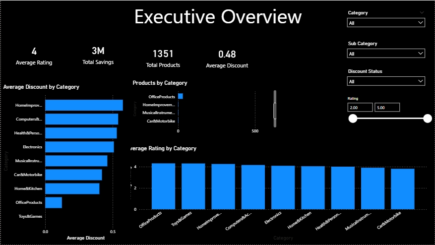

Developed a Sales Analytics Dashboard for UAE supermarkets, providing real-time insights into pricing trends, supermarket comparisons, anomaly detection, and issue tracking through interactive visualizations and centralized reporting.
Designed and developed an interactive Sales Analytics Platform for the UAE retail sector, enabling stakeholders to monitor supermarket pricing trends, identify pricing anomalies, and track operational issues across multiple locations. The platform integrates sales and pricing data into a centralized database and provides interactive dashboards for time-based price analysis, supermarket performance comparisons, anomaly detection, and issue management, supporting data-driven decision-making and regulatory oversight.
Represents the average sales value.
Business Use: Average Order Value, Monthly Sales Performance
The middle value when sales data is sorted.
Business Use: Typical Customer Spending Analysis
The most frequently occurring value.
Business Use: Most Common Purchase Value
Defined project goals and reporting needs.
Collected pricing and supermarket data.
Built a centralized data repository.
Create data models and establish relationships between datasets.
Created pricing and anomaly analysis models.
Developed interactive web dashboards.
Launched and monitored the platform.
| Source | Description |
|---|---|
| ERP System | Sales Transactions |
| CRM | Customer Information |
| Product Database | Product Details |
| Excel Reports | Historical Sales Data |
